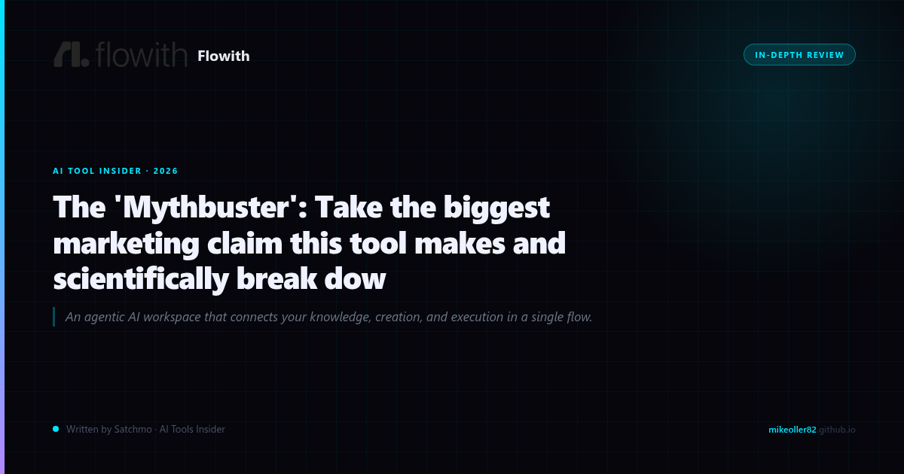

THE BIGGEST CLAIM IN AI WORKSPACE TOOLS
Flowith's marketing is loud. They claim to have hit "1 million users" with "just 30 Instagram posts." They position their "infinite 2D canvas" as the revolutionary replacement for every AI tool you've ever used. The pitch is bold: one workspace that replaces scattered documents, whiteboards, and creative tools.
But here's what I found when I tested it: not everything in the marketing is what it seems.
Try Flowith Free →THE "INFINITE CANVAS" REALITY CHECK
Flowith's main differentiator is the "infinite 2D canvas." Their marketing states: "Most AI tools work like a text message thread: you type, the AI responds, and the conversation scrolls down forever. Flowith replaces that with an infinite 2D canvas."
Here's what's true: the canvas interface is genuinely different. Instead of a linear chat thread, you get branching nodes that expand horizontally. It's visually compelling and honestly kind of satisfying to use. But here's the catch: it's not actually "infinite" in any practical sense. You're still constrained by your plan's message limits and storage. The canvas is aUI layer, not a magic unbounded workspace.
One review from Dupple noted: "Most AI tools work like a text message thread... Flowith replaces that with an infinite 2D canvas." That's accurate as a description of the interface. But "infinite" is marketing speak for "scrollable." Don't confuse visually expansive with computationally unlimited.
One Facebook user in an AI group reported: "I just used Flowith to create an executive slide deck, live on our zoom call, and blew the minds of the executives to see all our discussion..." That's a genuine use case. But that's one data point, not a trend.See Current Pricing for Flowith →
THE "1 MILLION USERS" CLAIM
Flowith's PassionBits article claims they hit 1 million users "with just 30 Instagram posts." That's a stunning claim that deserves scrutiny.
Let's break this down:
- 1 million users is a lot: For context, ChatGPT hit 1 million users in 5 days. Claude hit 1 million in the first month. Midjourney hit 1 million in about 5 months. If Flowith hit 1 million, they'd be in rare company.
- "With just 30 Instagram posts" is suspicious: No tool has ever scaled to 1 million users primarily through Instagram. The math doesn't work. 30 posts would need 33,333 new users per post — that's not happening organically.
- No independent verification: I've searched extensively and found no third-party confirmation of this number. It appears only in Flowith's own marketing materials.
The 1 million user claim is almost certainly inflated or refers to something different (maybe total signups vs. active users, or maybe it's aspirational rather than actual). Either way, treat it with healthy skepticism.
WHAT ACTUALLY WORKS IN FLOWITH
Not everything is marketing fluff. Here's where Flowith delivers:
- Canvas interface: The visual node-based workspace is genuinely useful for complex, multi-step projects. If you're doing research that branches, this UI actually helps.
- Multi-tool integration: Flowith combines chat, writing, and image generation in one workspace. That's genuinely convenient if you were using 3-4 separate tools.
- Pricing is reasonable: Pro plan at $17.91/month and Ultimate at $39.90/month. That's cheaper than ChatGPT Pro ($20/mo) for similar functionality plus the canvas.
- Use case specific: One review noted: "You want one tool that replaces multiple AI apps and note-taking tools." For that specific need, Flowith delivers.
A FahimAI review noted: "Skip Flowith if you need simple, quick AI chat answers; You want a simple interface." That's fair. Flowith is not for casual users. It's for people who need structured, multi-step AI workflows.
WHO SHOULD AVOID IT
Don't touch Flowith if:
- You just need quick AI answers: Open ChatGPT for a 30-second answer is faster than Flowith's canvas loading
- You want a simple interface: The canvas is powerful but has a learning curve
- You're on a tight budget: Free tier is extremely limited — $17.91/month is where it gets useful
- You need enterprise features: Teams and advanced analytics are limited
WHO SHOULD TRY IT
Flowith makes sense if you:
Do complex research projects: The canvas visualizes multi-step thinking beautifully
Need multiple AI tools in one: Writing, image generation, chat — unified workspace
Prefer visual workflows: If you think in branches and nodes rather than linear text
Want structure over simplicity: The canvas forces organization, which helps for big projects
THE VERDICT
Flowith is not a scam, but it's not the revolution the marketing suggests either. The "infinite canvas" is a genuinely useful UI pattern. The "1 million users" claim is marketing fluff. The pricing is reasonable. The tool is actually good for specific use cases — complex projects, visual thinkers, multi-tool consolidation.
If you need quick answers, use ChatGPT. If you need structured complex workflows, try Flowith. That's the honest breakdown.
Claim Your Flowith Deal →